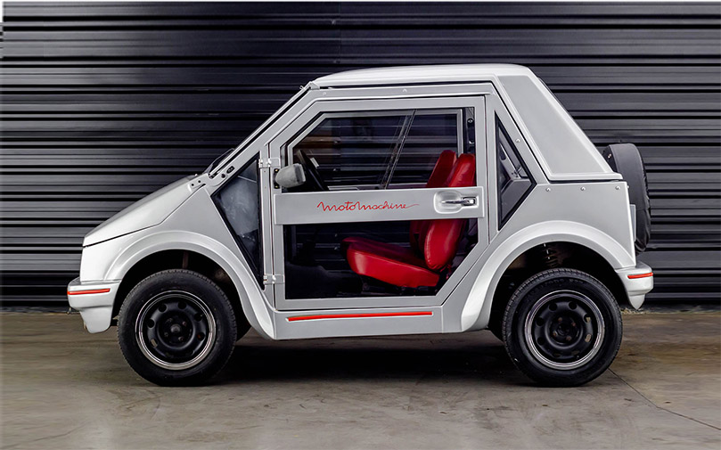
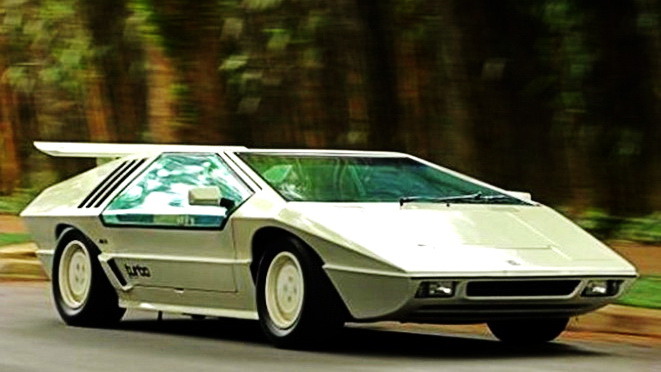
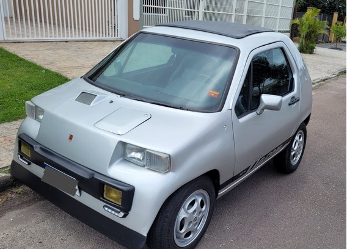

Carros exóticos
Sumário:
Posição 1: Gurgel Motomachine;
Posição 2: Hofstetter;
Posição 3: Dacon 828.
Gurgel Motomachine
O Motomachine foi uma das experiências de João do Amaral Gurgel, fundador da marca, com minicarros. Para ele, fabricar veículos desse tipo era quase uma obsessão. No fim das contas, pouquíssimas unidades do modelo foram finalizadas, mas grande parte do projeto é compartilhado pelo Supermini, último produto comercializado pela empresa. A história da Gurgel está repleta de carros exóticos! Veículos como o Carajás e o Itaipu são qualquer outra coisa, menos convencionais! O Motomachine, porém, talvez seja o mais original de todos. Como o próprio nome já diz, trata-se de uma mistura de carro com motocicleta, ideal para o trânsito das grandes cidades.

Hofstetter
Faróis escamoteáveis, portas do tipo “asa de gaivota” e enormes janelas laterais com uma seção de abertura corrediça… Elementos de estilo não faltam para colocar o Hofstetter entre os carros mais exóticos do país. O esportivo de fabricação artesanal surgiu nos anos 80 e chamou a atenção com o design inspirado nos bólidos da Lamborghini. O desempenho não chegava a tanto, mas se destacava para os padrões brasileiros dos anos 80. O motor era um 1.8 de origem Volkswagen, utilizado no Gol GT, mas sobrealimentado por um turbocompressor. O conjunto desenvolvia 140 cv, número espantoso para a época. Posteriormente foi adotado um 2.0, também turbinado. Hoje, os poucos veículos produzidos pela Hofstetter são disputados pelos colecionadores.

Dacon 828
A Dacon fez outros minicarros, entre os quais o Nick, uma espécie de Gol encurtado com diversas alterações visuais. Porém, o 828 é o mais original, graças às linhas da carroceria, elaboradas pelo designer Anísio Campos. É tão ousado que nem parece ter sido criado cerca de 30 anos atrás. O estilo, o tamanho diminuto e as características técnicas tornam o modelo digno de figurar em qualquer lista de carros exóticos. Por falar em soluções técnicas, o 828 tinha motor traseiro e porta-malas dianteiro. Quem já deduziu que a mecânica foi herdada do Fusca acertou,literalmente, em parte. É que a Dacon o equipou com um 1.600 a ar de origem Volkswagen, que podia vir inteiro ou cerrado ao meio! No caso da segunda opção, o resultado eram dois cilindros e cerca de 800 cm³ de cilindrada, suficientes para as dimensões do veículo.

Bibliografia
Gurgel Motomachine
Hofstetter
Dacon 828